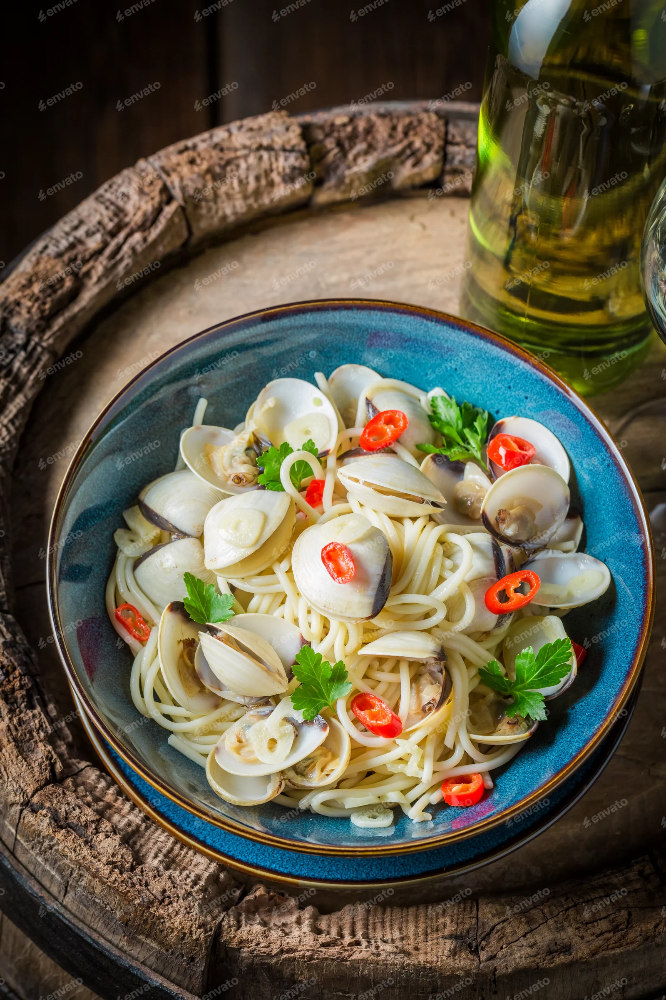
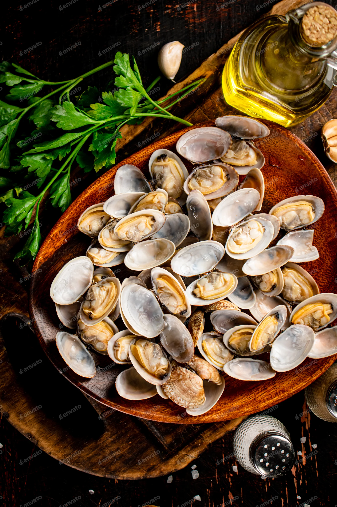
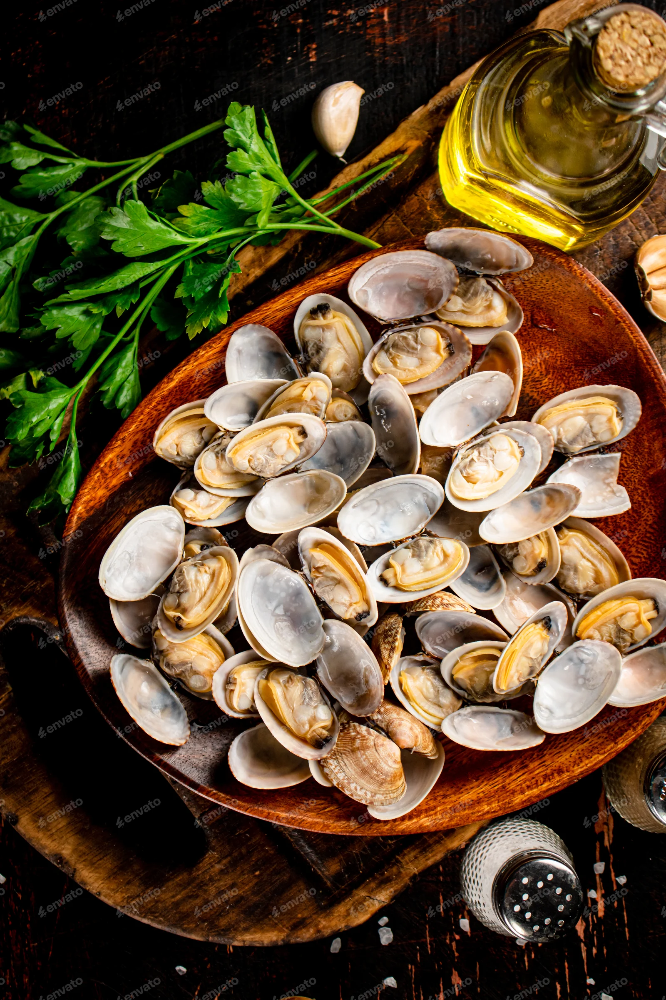

Recept pasta vongole

Welcom op mijn website waar ik jullie ga uitleggen hoe je lekkere pasta vongole bereid.
Dit is mijn lievelings gerecht sinds klein hopelijk vinden jullie het ook zo lekker als ik !
Ingridienten
- 500g linguine
- 600g vongole
- 4 eetlepels persil
- 40g boter
- 4 teentjes knoflook
- 1 glas witte wijn
- olijf olie
- peper
Recept
- Snij de look in fijne schijfjes, kleur ze lichtjes aan in de olie.
Vanaf de look aangekleurd is, doe je de Vongole-schelpen bij de olie en look.
Zet het deksel op de pan/pot en laat op een hoog vuur even staan tot de schelpen opengaan.
- Blus met witte wijn, laat dit even inkoken.
- Kook de pasta zoals vermeld op de verpakking, in ruim water.
- Meng de pasta onder de schelpen en laat nog even mee sudderen.
- Werk af met platte peterselie, peper en zout.


 
